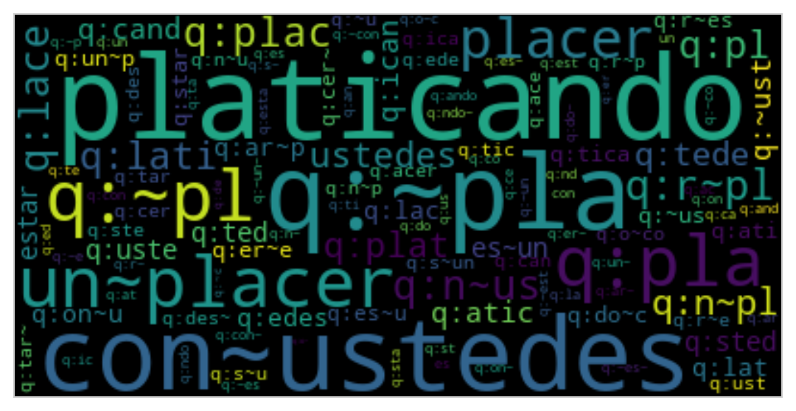
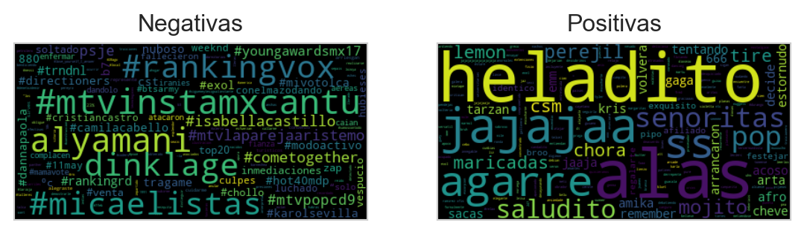

from EvoMSA import BoW,\
DenseBoW
from microtc.utils import tweet_iterator
from wordcloud import WordCloud
import numpy as np
import pandas as pd
from matplotlib import pylab as plt
import seaborn as sns5 Representación de Texto
El objetivo de la unidad es
Paquetes usados
Video explicando la unidad
5.1 Bolsa de Palabras Dispersa
La idea de una bolsa de palabras discretas es que después de haber normalizado y segmentado el texto (Capítulo 2), cada token \(t\) sea asociado a un vector único \(\mathbf{v_t} \in \mathbb R^d\) donde la \(i\)-ésima componente, i.e., \(\mathbf{v_t}_i\), es diferente de cero y \(\forall_{j \neq i} \mathbf{v_t}_j=0\). Es decir la \(i\)-ésima componente está asociada al token \(t\), se podría pensar que si el vocabulario está ordenado de alguna manera, entonces el token \(t\) está en la posición \(i\). Por otro lado el valor que contiene la componente se usa para representar alguna característica del token.
El conjunto de vectores \(\mathbf v\) corresponde al vocabulario, teniendo \(d\) diferentes token en el mismo y por definición \(\forall_{i \neq j} \mathbf{v_i} \cdot \mathbf{v_j} = 0\), donde \(\mathbf{v_i} \in \mathbb R^d\), \(\mathbf{v_j} \in \mathbb R^d\), y \((\cdot)\) es el producto punto. Cabe mencionar que cualquier token fuera del vocabulario es descartado.
Usando esta notación, un texto \(x\) está representado por una secuencia de términos, i.e., \((t_1, t_2, \ldots)\); la secuencia puede tener repeticiones es decir, \(t_j = t_k\). Utilizando la característica de que cada token está asociado a un vector \(\mathbf v\), se transforma la secuencia de términos a una secuencia de vectores (manteniendo las repeticiones), i.e., \((\mathbf{v_{t_1}}, \mathbf{v_{t_2}}, \ldots)\). Finalmente, el texto \(x\) se representa como:
\[ \mathbf x = \frac{\sum_t \mathbf{v_t}}{\lVert \sum_t \mathbf{v_t} \rVert}, \tag{5.1}\]
donde la suma se hace para todos los elementos de la secuencia, \(\mathbf x \in \mathbb R^d\), y \(\lVert \mathbf w \rVert\) es la norma Euclideana del vector \(\mathbf w.\)
flowchart LR
Terminos([Texto\n Segmentado]) -- Pre-entrenados --> A[Asociación]
Terminos --> Entrenamiento[Estimación\n de Pesos]
Corpus([Corpus]) -.-> Entrenamiento
Entrenamiento --> A
A --> Repr([Representación])
Antes de iniciar la descripción detallada del proceso de representación utilizando una bolsa de palabras dispersas, es conveniente ilustrar este proceso mediante la Figura 5.1. El texto segmentado es el resultado del proceso ilustrado en Figura 2.1. El texto segmentado puede seguir dos caminos, en la parte superior se encuentra el caso cuando los pesos han sido identificados previamente y en la parte inferior es el procedimiento cuando los pesos se estiman mediante un corpus específico que normalmente es un conjunto de entrenamiento.
5.1.1 Pesado de Términos
Como se había mencionado el valor que tiene la componente \(i\)-ésima del vector \(\mathbf{v_t}_i\) corresponde a una característica del término asociado, este procedimiento se le conoce como el esquema de pesado. Por ejemplo, si el valor es \(1\) (i.e., \(\mathbf{v_{t_i}} = 1\)) entonces el valor está indicando solo la presencia del término, este es el caso más simple. Considerando la Ecuación 5.1 se observa que el resultado, \(\mathbf x\), cuenta las repeticiones de cada término, por esta característica a este esquema se le conoce como frecuencia de términos (term frequency (TF)).
Una medida que complementa la información que tiene la frecuencia de términos es el inverso de la frecuencia del término (Inverse Document Frequency (IDF)) en la colección, esta medida propuesta por Sparck Jones (1972) se usa en un método de pesado descrito por Salton y Yang (1973) el cual es conocido como TFIDF. Este método de pesado propone el considerar el producto de la frecuencia del término y el inverso de la frecuencia del término (Inverse Document Frequency (IDF) ) en la colección como el peso del término.
5.1.2 Ejemplos
En los siguientes ejemplos se usa una bolsa de palabras con un pesado TFIDF pre-entrenada, los datos de esta bolsa de palabras se encuentra en el atributo BoW.bow. El tamaño del vocabulario es \(131072\), que está compuesto por palabras, gramas de palabras y caracteres. En el siguiente ejemplo se muestran los primeros tres gramas con sus respectivos valores TFIDF de la frase Buen día. Se puede observar que el tm regresa una lista de pares, donde la primera parte es el identificador del término, e.g., \(11219\) y el segundo es el valor TFIDF, e.g., \(0.3984\). La lista tiene un tamaño de \(27\) elementos, el resto de los \(131072\) componentes son cero dado que no se encuentran en el texto representado.
bow = BoW(lang='es')
tm = bow.bow
vec = tm['Buen día']
vec[:3][(11219, 0.3984336285263178),
(11018, 0.3245843730253675),
(24409, 0.2377856890280623)]El uso del identificador del término se puede reemplazar por el término para poder visualizar mejor la representación del texto en el espacio vectorial. El diccionario que se encuentra en BoW.names hace la relación identificador a término. Se puede ver que el primer elemento del vector es el bigrama buen~dia, seguido por buen y el tercer término es dia. Los siguientes términos que no se muestran corresponden a gramas de caracteres. El valor TFIDF no indica la importancia del término, mientras mayor sea el valor, se considera más importante de acuerdo al TFIDF. En este ejemplo el bigrama tiene más importancia que las palabras y la palabra buen es más significativa que dia.
[(bow.names[k], v)
for k, v in vec[:3]][('buen~dia', 0.3984336285263178),
('buen', 0.3245843730253675),
('dia', 0.2377856890280623)]Con el objetivo de ilustrar una heurística que ha dado buenos resultados en el siguiente ejemplo se presentan las primeras cuatro componentes del texto Buen día colegas. Se puede observar como los valores de IDF de los términos comunes cambiaron, por ejemplo para el caso de buen~dia cambio de \(0.3984\) a \(0.2486\). Este es el resultado de que los valores están normalizados tal como se muestra en la Ecuación 5.1. Por otro lado, se observa que ahora el término más significativo es la palabra colegas.
txt = 'Buen día colegas'
[(tm.id2token[k], v)
for k, v in tm[txt][:4]][('buen~dia', 0.24862785236357487),
('buen', 0.20254494048246244),
('dia', 0.1483814139998851),
('colegas', 0.3538047214393573)]Una manera de visualizar la representación es creando una nube de palabras de los términos, donde el tamaño del termino corresponde al valor TFIDF. En la Figura 5.2 muestra la nube de palabras generada con los términos y sus respectivos valores IDF del texto Es un placer estar platicando con ustedes.
Código
txt = 'Es un placer estar platicando con ustedes.'
tokens = {tm.id2token[id]: v for id, v in tm[txt]}
word_cloud = WordCloud().generate_from_frequencies(tokens)
plt.imshow(word_cloud, interpolation='bilinear')
plt.grid(False)
plt.tick_params(left=False, right=False, labelleft=False,
labelbottom=False, bottom=False)

El texto se representa en un espacio vectorial, entonces es posible comparar la similitud entre dos textos en esta representación, por ejemplo, en el siguiente ejemplo se compara la similitud coseno entre los textos Es un placer estar platicando con ustedes. y La lluvia genera un caos en la ciudad. El valor obtenido es cercano a cero indicando que estos textos no son similares.
txt1 = 'Es un placer estar platicando con ustedes.'
txt2 = 'La lluvia genera un caos en la ciudad.'
vec1 = tm[txt1]
vec2 = tm[txt2]
f = {k: v for k, v in vec1}
np.sum([f[k] * v for k, v in vec2 if k in f])0.01645519294478695Complementando el ejemplo anterior, en esta ocasión se comparan dos textos que comparten el concepto plática, estos son Es un placer estar platicando con ustedes. y Estoy dando una platica en Morelia. se puede observar que estos textos son más similares que los ejemplos anteriores.
txt1 = 'Es un placer estar platicando con ustedes.'
txt2 = 'Estoy dando una platica en Morelia.'
vec1 = tm[txt1]
vec2 = tm[txt2]
f = {k: v for k, v in vec1}
np.sum([f[k] * v for k, v in vec2 if k in f])0.2035427118119315Habiendo realizado la similitud entre algunos textos lleva a preguntarse cómo será la distribución de similitud entre varios textos, para poder contestar esta pregunta, se utilizarán los datos de Delitos, los cuales se guardan en la variable D tal y como se en las siguientes instrucciones.
fname = 'delitos/delitos_ingeotec_Es_train.json'
D = list(tweet_iterator(fname))El primer paso es representar todos los textos en el espacio vectorial de la bolsa de palabras, lo cual se logra con el método BoW.transform (primera linea), el segundo paso es calcular la similitud entre todos los textos, como se muestra en la segunda linea.
X = tm.transform(D)
sim = np.dot(X, X.T)La distribución de similitud se muestra en la Figura 5.3 se puede observar que las similitudes se encuentran concentradas cerca del cero, esto indica que la mayoría de los textos están distantes, esto es el resultado de la bolsa de palabras discreta que se enfoca en modelar las palabras y no el significado de las mismas.
Código
sns.displot(sim.data)
5.2 Bolsa de Palabras Densa
La Figura 5.4 muestra el procedimiento que se sigue para representar un texto en una bolsa de palabras dispersa. En primer lugar la bolsa de palabras densa considera que los vectores asociados a los términos se encuentra pre-entrenados y en general no es factible entrenarlos en el momento, esto por el tiempo que lleva estimar estos vectores.
flowchart LR
Terminos([Texto\n Segmentado]) -- Pre-entrenados --> A[Asociación]
A --> Repr([Representación])
El texto se representa como el vector \(\mathbf u\) que se calcula usando la Ecuación 5.2 donde se observa que es la suma de los vectores asociados a cada término más un coeficiente \(\mathbf{w_0}\). En particular el coeficiente \(\mathbf{w_0} \in \mathbb R^{M}\) no se encuentra en todas las representaciones densas, pero en la representación que se usará contiene este vector, \(M\) es la dimensión de la representación densa.
\[ \mathbf u = \sum_t \mathbf{u_t} + \mathbf{w_0}. \tag{5.2}\]
En vector \(\mathbf {u_t}\) está asociado al término \(t\), en particular este vector en la representación densa que se describirá está definido en términos de una bolsa de palabras dispersa (Ecuación 5.1) como se puede observar en la Ecuación 5.3
\[ \mathbf{u_t} = \frac{\mathbf W \mathbf {v_t}}{\lVert \sum_t \mathbf{v_t} \rVert}, \tag{5.3}\]
donde \(\mathbf W \in \mathbb R^{M \times d}\) es la matriz que hace la proyección de la representación dispersa a la representación densa, se puede observar esa operación está normalizada con la norma Euclideana de la representación dispersa.
Combinando las Ecuación 5.2 y Ecuación 5.3 queda la
\[ \begin{split} \mathbf{u_t} &= \sum_t \frac{\mathbf W \mathbf {v_t}}{\lVert \sum_t \mathbf{v_t} \rVert} + \mathbf{w_0} \\ &= \mathbf W \frac{\sum_t \mathbf {v_t}}{\lVert \sum_t \mathbf{v_t} \rVert} + \mathbf{w_0}, \end{split} \]
donde se puede observar la representación dispersa (Ecuación 5.1), i.e., \(\frac{\sum_t \mathbf {v_t}}{\lVert \sum_t \mathbf{v_t} \rVert}\) lo cual resulta en la Ecuación 5.4
\[ \mathbf u = \mathbf W \mathbf x + \mathbf{w_0}, \tag{5.4}\]
que representa un texto en el vector \(\mathbf u \in \mathbb R^M.\)
Para algunas representaciones densas, las componentes de la matriz de transformación \(\mathcal W\) están asociadas a conceptos, en el caso que se analiza estas están asociadas a palabras claves o emojis.
5.2.1 Ejemplos
Continuando con los ejemplos presentados para la bolsa dispersa (Sección 5.1.2) en esta sección se hace el análisis con la representación de palabras densa. El primer paso es inicializar la clase que contiene las representaciones densas, esto se hace con la siguiente instrucción.
dense = DenseBoW(lang='es',
voc_size_exponent=15,
emoji=False, keyword=True,
distance_hyperplane=True,
dataset=False)Para representar un texto en el espacio vectorial denso se utiliza el método transform, por ejemplo la siguiente instrucción representa el texto Es un placer estar platicando con ustedes. Solo se visualizan los valores de las primeras tres componentes.
txt1 = 'Es un placer estar platicando con ustedes.'
dense.transform([txt1])[0, :3]array([-0.0042934 , -0.00429635, -0.00515905])Lo primero que se observa es que los valores son negativos, a diferencia del caso disperso donde todos los valores son positivos. En este tipo de representación cada componente está asociada a una palabra las cuales se pueden conocer en el atributo names. El siguiente código muestra las tres primeras palabras asociadas al ejemplo anterior.
dense.names[:3]['semanas', 'cuatro', 'piensa']Siguiente la idea de utilizar una nube de palabras para visualizar el vector que representa el texto modelado, La Figura 5.5 muestra las nubes de palabras generada con las características y sus respectivos valores del texto Es un placer estar platicando con ustedes. Durante la generación de la nube de palabras se decidió representar genera una nube de palabras con las palabras con coeficiente negativo más significativo y aquellas con los coeficientes positivos más significativos. Se puede observar que las palabras positivas contienen componentes que están relacionados al enunciado, pero al mismo tiempo leyendo los términos positivos es complicado construir el texto representado. Adicionalmente las términos negativos que se observan en la nube de palabras en su mayoría son hashtags que tiene muy poca relación al texto representado.
Código
values = dense.transform([txt1])
names = dense.names
tokens_pos = {names[id]: v for id, v in enumerate(values[0]) if v > 0}
tokens_neg = {names[id]: v * -1 for id, v in enumerate(values[0]) if v < 0}
word_pos = WordCloud().generate_from_frequencies(tokens_pos)
word_neg = WordCloud().generate_from_frequencies(tokens_neg)
fig, (ax1, ax2) = plt.subplots(1, 2)
for cloud, ax, title in zip([word_neg, word_pos],
[ax1, ax2],
['Negativas',
'Positivas']):
ax.imshow(cloud, interpolation='bilinear')
ax.grid(False)
ax.tick_params(left=False, right=False, labelleft=False,
labelbottom=False, bottom=False)
ax.set_title(title)

Esta representación también permite comparación de similitud entre textos, en el siguiente ejemplo se calcula la similitud entre el texto Es un placer estar platicando con ustedes. y los textos La lluvia genera un caos en la ciudad. y Estoy dando una platica en Morelia. tal y como se hizo para la representación dispersa. Se puede observar que existe una mayor similitud entre los textos que contienen el concepto plática, lo cual es equivalente a lo que se observó en el ejemplo con bolsa de palabras discretas, pero los valores son significativamente mayores que en ese caso.
txt1 = 'Es un placer estar platicando con ustedes.'
txt2 = 'La lluvia genera un caos en la ciudad.'
txt3 = 'Estoy dando una platica en Morelia.'
X = dense.transform([txt1, txt2, txt3])
np.dot(X[0], X[1]), np.dot(X[0], X[2])(0.7728943423183761, 0.8721107462230386)Los valores de similitud entre los enunciados anteriores, se puede visualizar en una nube de palabras, utilizando solo las características positivas. La Figura 5.6 muestra las nubes de palabras generadas, en ellas es complicado comprender la razón por la cual la frases que tiene el concepto plática están más cercanas, es probable que la cola de la distribución, es decir, las palabras menos significativas son las que acercan las dos oraciones.
Código
values = dense.transform([txt1, txt2, txt3])
names = dense.names
tokens_pos = {names[id]: v for id, v in enumerate(values[0]) if v > 0}
tokens_neg = {names[id]: v for id, v in enumerate(values[1]) if v > 0}
tokens_otro = {names[id]: v for id, v in enumerate(values[2]) if v > 0}
word_pos = WordCloud().generate_from_frequencies(tokens_pos)
word_neg = WordCloud().generate_from_frequencies(tokens_neg)
word_otro = WordCloud().generate_from_frequencies(tokens_otro)
fig, (ax1, ax2, ax3) = plt.subplots(1, 3)
for cloud, ax, title in zip([word_pos, word_neg, word_otro],
[ax1, ax2, ax3],
['Es un ... ustedes.',
'La lluvia ... ciudad.',
'Estoy ... Morelia.']):
ax.imshow(cloud, interpolation='bilinear')
ax.grid(False)
ax.tick_params(left=False, right=False, labelleft=False,
labelbottom=False, bottom=False)
ax.set_title(title)Al igual que en el caso disperso se puede calcular la distribución de similitud. Las siguientes instrucciones calcula la similitud coseno entre todos los ejemplos del conjunto de entrenamiento (\(\mathcal T\)).
X = dense.transform(D)
sim = np.dot(X, X.T)La Figura 5.7 muestra el histograma de las similitudes calculada mediante la bolsa densa. Aquí se puede observar que la gran mayoría de los ejemplos tiene una similitud mayor y tiene una desviación estándar mayor que la vista en la Figura 5.3.
Código
sns.displot(sim.flatten())